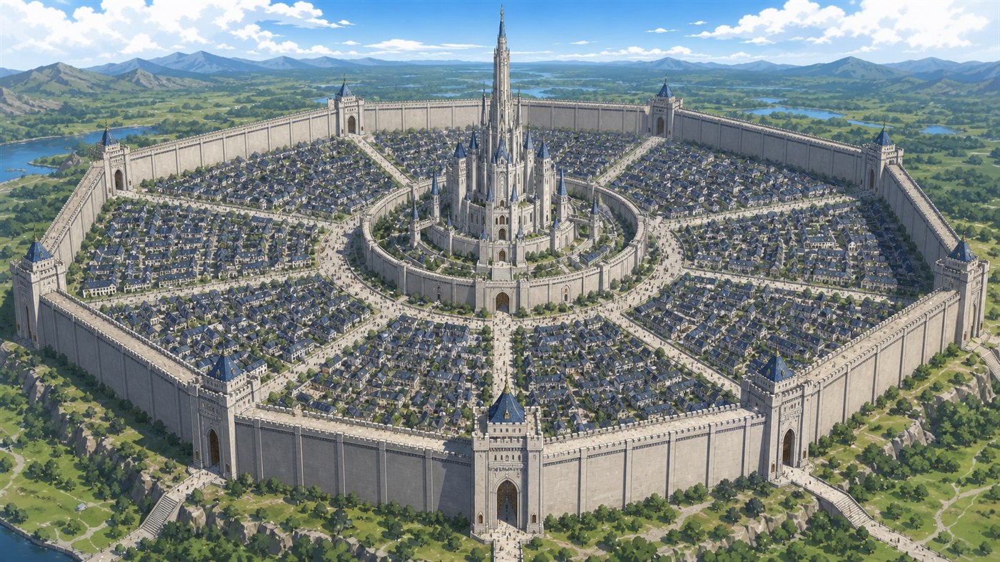

인간 연합 장로회
일곱 가문의 최고 권력. 별의 낙하 지점과 유물 소울스톤을 독점하고 성생체 계획을 숨깁니다.
WORLD BIBLE · CANON
모든 생명은 이마에 영혼을 지니고 태어납니다. 죽은 영혼은 별이 되어 다시 떨어지고, 인간 연합은 그 별을 독점하기 위해 거대한 성과 학살의 질서를 세웠습니다.

SOULSTONE RULES
힘의 설정이 아니라 삶과 죽음의 법칙입니다. 작품의 전투와 갈등은 이 기준을 벗어나지 않습니다.
FIFTY-YEAR HISTORY
장로회의 진짜 목적은 초반에 설명하지 않고, 여행과 기록을 통해 단계적으로 드러납니다.
서로 다른 종족이 충돌하면서도 같은 마을과 길을 나누어 사용합니다.
통일 전쟁에서 괴물의 위협을 명분으로 세력을 모으고 1대 원수를 선출합니다.
괴물은 성 건설과 실험에 강제 동원되고, 살아남은 공동체는 성 밖으로 숨어듭니다.
열두 살의 혼혈 소년이 부모를 잃고 복수와 공존 사이의 긴 여정을 시작합니다.
힘으로 굴복시키는 대신 각 공동체의 문제를 함께 해결하며 신뢰를 쌓습니다.
50년간 모은 영혼으로 성이 깨어나고, 인간과 괴물은 함께 시민을 구합니다.
FACTIONS
인간 전체가 악하지 않고 괴물 전체가 정의롭지도 않습니다. 같은 세력 안에서도 서로 다른 선택을 합니다.
일곱 가문의 최고 권력. 별의 낙하 지점과 유물 소울스톤을 독점하고 성생체 계획을 숨깁니다.
3대 원수와 네 군 대장이 지휘합니다. 명령을 끝까지 따르는 자와 전쟁을 멈추는 자로 나뉩니다.
뱀파이어, 반인반수, 트롤, 골렘, 곤충 종족 등이 흩어져 생존하며 서로 다른 문화와 문제를 가집니다.
주인공과 늑대, 각 공동체의 지도자, 버림받은 인간들이 구조와 공존이라는 공동 목표로 연결됩니다.
어인족과 하피족은 여행에 합류하지 않고 바다와 하늘의 고향을 지키며 최종전에 힘을 보탭니다.
영토 안 전투를 금지하고 종족을 가리지 않고 치료합니다. 전후 평화 협정의 장소가 됩니다.
CENTRAL CASTLE
초고층 외벽 안에는 인간 시민의 일상이 있고, 일곱 가문 구역의 중심에는 장로회 성채가 솟습니다. 성벽과 생활 공간 아래에는 관측 기록, 실험 시설과 수많은 소울스톤이 연결된 인공 기관이 숨겨져 있습니다.
후반부에 성은 골렘이 아닌 전례 없는 새 생명으로 깨어납니다. 주인공은 그것을 악당이 아니라 장로회가 만든 마지막 희생자로 바라봅니다.
NEXT
세계의 설명은 여기까지입니다. 소설판에서는 비밀이 인물의 선택과 사건을 따라 순서대로 드러납니다.